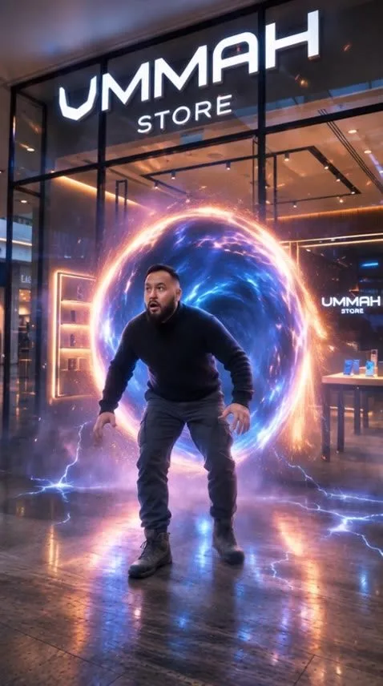
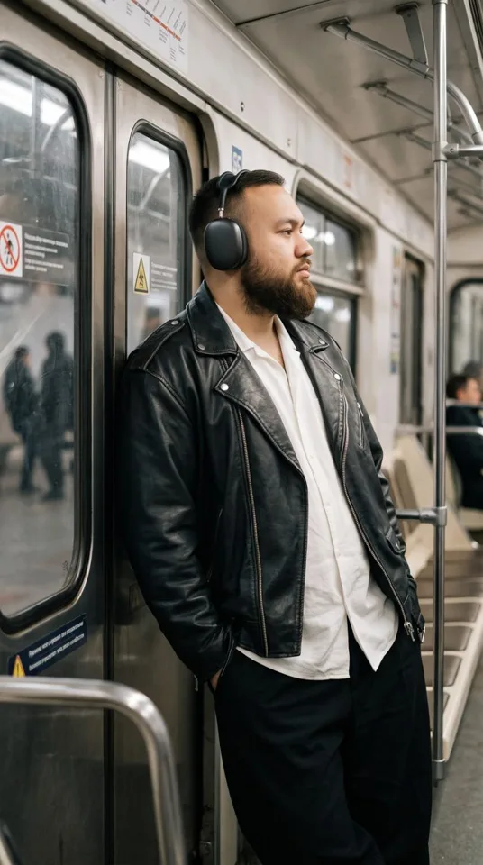

VOZMI PROMPTИдея.
Визуал.
Действие.WEB EXPERIENCE / 2026
Визуал.
Действие.WEB EXPERIENCE / 2026
VOZMI PROMPT
Этот сайт — пример нашей работы с визуальной подачей и заявками.
Хочу такой сайт
AI CREATIVE STUDIO · АСТАНА
AI-видео, реклама, визуальные истории
и сайты нового поколения.
01 / ИЗБРАННОЕ
Реальные проекты и творческие эксперименты.
Каждая работа — новый визуальный мир.
Этот сайт — пример нашей работы с визуальной подачей и заявками.
Хочу такой сайт02 / ВОЗМОЖНОСТИ
Истории, которые хочется досмотреть. Кинематографичные ролики от идеи до монтажа.
Обсудить услугуПродукт в центре внимания. Креативы для рекламных кампаний, Reels и TikTok.
Обсудить услугуВизуальный язык вашего бренда. Изображения для рекламы, обложек и соцсетей.
Обсудить услугуЦифровые персонажи для ваших историй. Обсудим образ, голос и формат.
Обсудить услугуОт первого впечатления до заявки. Лендинги, сайты-визитки и веб-проекты.
Обсудить услугуИдея вне привычных рамок. Персональные фильмы и комплексный AI-продакшн.
Обсудить услугу03 / ОТ ИДЕИ К КАДРУ
UMMAH STORE / KASPI ЖҰМА
XL DETAILING / GTA
Обсуждаем цель, аудиторию, формат и материалы.
Согласуем концепцию, визуальный язык и сценарий.
Генерация, отбор, монтаж и внимание к деталям.
Согласуем финал и передаём материалы в нужных форматах.

04 / ЗА КАДРОМ
Я Ислам, AI-креатор из Астаны. VOZMI PROMPT — моя творческая студия.
Создаю ролики от идеи и сценария до монтажа, делаю визуалы и запускаю сайты для бизнеса и личных проектов. Генеративный ИИ — мой инструмент. История и ваша задача — отправная точка.
Давайте познакомимся05 / ЕСТЬ ВОПРОСЫ?
Стоимость зависит от идеи, объёма и форматов. Опишите задачу и ориентировочный бюджет — обсудим подходящий вариант.
Краткое описание задачи, примеры направления и ваши материалы: логотип, фотографии продукта или брендбук, если они есть.
Согласуем срок после обсуждения сценария и объёма. Желаемую дату можно указать в заявке.
Да. Расскажите, что хотите создать. Вместе оценим реалистичность идеи и выберем формат.
Сначала согласуем концепцию и объём работы, затем обсуждаем промежуточные материалы и финальную версию. Условия правок фиксируем перед стартом.
06 / ВАШ СЛЕДУЮЩИЙ ПРОЕКТ
Расскажите об идее.
Превратим её в понятный план.